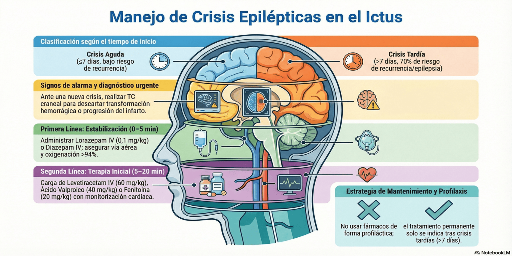

Las crisis epilépticas son una complicación neurológica frecuente en el ictus (incidencia del 3-10%). Su aparición se asocia con la gravedad del cuadro, la afectación cortical, la etiología cardioembólica y la transformación hemorrágica
Diagnóstico y definiciones
- Crisis aguda (Sintomática): Crisis que ocurre dentro de los primeros 7 días desde el inicio del ictus.
- Crisis tardía (No provocada / Epilepsia post-ictus): Crisis que ocurre después de los 7 días del ictus. Tienen un altísimo riesgo de recurrencia (70%).
- Estatus epiléptico: Crisis de duración >5 minutos o crisis repetidas sin recuperación completa del nivel de consciencia entre ellas.
- Causas reversibles a descartar: Alteraciones metabólicas (hipoglucemia severa, hiponatremia, uremia), hipoxia, infecciones intercurrentes o fiebre.
- Fármacos que reducen el umbral epiléptico: Antibióticos (imipenem, penicilinas a altas dosis, quinolonas), antidepresivos (tricíclicos, bupropión), y otros (teofilina, algunos antipsicóticos).
- Signo de alarma radiológica: Un nuevo episodio convulsivo puede indicar progresión del infarto, edema cerebral expansivo o transformación hemorrágica. Se debe realizar TC craneal de control.
- (Nota:
Una crisis al inicio de los síntomas no contraindica la
fibrinólisis intravenosa si se demuestra que el déficit es
de origen isquémico y no una parálisis de Todd
post-crítica).
Advertencias de
Seguridad (Profilaxis)
No se recomienda el
uso profiláctico de fármacos anticrisis en
pacientes con ictus isquémico o hemorrágico que no hayan
presentado convulsiones clínicas o electrográficas.
Abordaje de la crisis aguda y Estatus Epiléptico
El objetivo es detener la actividad convulsiva rápidamente para prevenir el daño secundario por aumento del metabolismo y de la presión intracraneal. Asegurar vía aérea, oxigenación (SpO2 >94%) y acceso venoso.
- Primera línea (0–5 minutos) - Fase de estabilización:
- Lorazepam IV: 0,1 mg/kg (máx. 4 mg por dosis). Se puede
repetir una vez.
- Alternativas: Diazepam IV 0,15–0,2 mg/kg (máx. 10 mg) o Midazolam IM (10 mg si >40 kg).
- Segunda línea (5–20 minutos) - Fase inicial de terapia: Iniciar inmediatamente dosis de carga de un anticonvulsivo de segunda línea:
- Levetiracetam IV: 60 mg/kg en 15 min (máximo 4.500 mg por dosis).
- Ácido valproico IV: 40 mg/kg en 15-30 min (máximo 3.000 mg por dosis).
- Fosfenitoína / Fenitoína IV: 20 mg/kg (requiere
monitorización cardíaca estricta por riesgo de arritmia e
hipotensión).
Tratamiento de Mantenimiento
- Tras una crisis aguda (< 7 días): La recurrencia es baja (10-20%). Como norma general, se sugiere no instaurar tratamiento de mantenimiento a largo plazo tras una primera crisis aguda, pudiendo retirarse tras la estabilización de la fase aguda.
- Tras una crisis tardía (> 7 días) o epilepsia demostrada: Existe alto riesgo de recurrencia (epilepsia lesional). Debe instaurarse mantenimiento de forma permanente.
- Fármacos de elección: Levetiracetam (ej. 500-1000 mg/12h), Lamotrigina o Ácido Valproico.
- Evitar en lo posible los fármacos de primera generación (especialmente la fenitoína) para el mantenimiento, ya que interfieren con la recuperación funcional motora y se asocian a mayor morbimortalidad.
Consideración especial:
en pacientes con ictus, el estatus epiléptico puede ser
no convulsivo. Si el paciente con
ictus presenta un estado mental fluctuante o una alteración del
nivel de consciencia desproporcionada que no se explica por un
nuevo hallazgo en la neuroimagen, existe alta sospecha clínica.
Su diagnóstico requiere indicar monitorización mediante
EEG Continuo durante 24 a 48 horas (si está
disponible).
Volver al índice